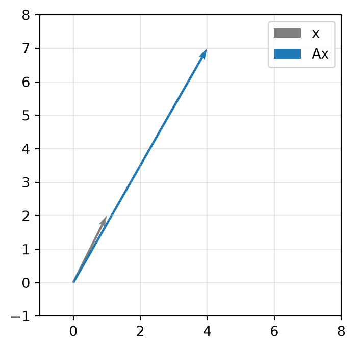

This chapter collects the background that the rest of the book assumes. You don’t need to read it straight through. Skim the headings, try the quick questions, and read properly any section where the questions give you trouble. Each section says where in the book the ideas are first used.
Angles are measured in degrees or in radians, where a full turn is \(360° = 2\pi\) radians. So \(180° = \pi\), \(90° = \pi/2\) and \(1 \text{ radian} \approx 57.3°\). Mathematics and programming languages use radians by default: in Python, np.sin(np.pi / 2) is 1, but np.sin(90) is the sine of 90 radians. MATLAB has sind and cosd for degrees.
Sine and cosine
Measure an angle \(\theta\) anticlockwise from the positive \(x\)-axis. The point at that angle on the circle of radius 1 about the origin is \((\cos\theta, \sin\theta)\). This is the picture behind every rotation matrix in the book.
\(\theta\)
\(0°\)
\(30°\)
\(45°\)
\(60°\)
\(90°\)
radians
\(0\)
\(\pi/6\)
\(\pi/4\)
\(\pi/3\)
\(\pi/2\)
\(\cos\theta\)
\(1\)
\(\sqrt{3}/2\)
\(1/\sqrt{2}\)
\(1/2\)
\(0\)
\(\sin\theta\)
\(0\)
\(1/2\)
\(1/\sqrt{2}\)
\(\sqrt{3}/2\)
\(1\)
Identities you will need
\[
\cos^2\theta + \sin^2\theta = 1
\] (Pythagoras on the unit circle), and \[
\cos(-\theta) = \cos\theta,
\]\[
\sin(-\theta) = -\sin\theta.
\] The angle addition formulas, \[
\cos(\alpha + \beta) = \cos\alpha\cos\beta - \sin\alpha\sin\beta,
\]\[
\sin(\alpha + \beta) = \sin\alpha\cos\beta + \cos\alpha\sin\beta,
\] are derived from matrices in 5 Composing transformations, so you don’t need to remember them.
TipQuick check: what are the coordinates of the point at \(120°\) on the unit circle?
\((\cos 120°, \sin 120°) = (-\tfrac{1}{2}, \tfrac{\sqrt{3}}{2})\): it is the reflection of the \(60°\) point in the \(y\)-axis.
A vector is a quantity with both a size and a direction, such as a velocity or a force. It can be drawn as an arrow, and described by a list of numbers called its components: how far the arrow goes along each axis. In two dimensions, \[
\vect{v} = \mat{3 \\ 4}
\] is the arrow from the origin to the point \((3, 4)\): 3 units along the \(x\)-axis and 4 up the \(y\)-axis. In three dimensions there is a third component, for the \(z\)-axis.
This book writes vectors as columns, as above. (Later chapters sometimes write a column on one line to save space, as \((3, 4)\T\); the small \(\mathsf{T}\) is explained in 1 What is a matrix?.)
Unit vectors along the axes
The vectors of length 1 pointing along the axes are \[
\ui = \mat{1 \\ 0},
\]\[
\uj = \mat{0 \\ 1}
\] in two dimensions, and \[
\ui = \mat{1 \\ 0 \\ 0},
\]\[
\uj = \mat{0 \\ 1 \\ 0},
\]\[
\uk = \mat{0 \\ 0 \\ 1}
\] in three. Any vector can be built from them by taking the right amount of each: \[
\mat{3 \\ 4} = 3\ui + 4\uj.
\]
(If you are used to a different notation for these, such as \(\hat{\imath}\) or \(\mathbf{e}_1\), choose it with the Notation button.)
Length
By Pythagoras’ theorem, the length (or magnitude) of \(\vect{v} = (v_1, v_2)\T\) is \[
\lVert \vect{v} \rVert = \sqrt{v_1^2 + v_2^2},
\] and in three dimensions \(\lVert \vect{v} \rVert = \sqrt{v_1^2 + v_2^2 + v_3^2}\). For example, the vector with components 3 and 4 has length \(\sqrt{9 + 16} = 5\).
Length and direction
Instead of giving its components, you can describe a vector in two dimensions by its length \(r\) and the angle \(\theta\) it makes with the positive \(x\)-axis. The components and the length form a right-angled triangle, so \[
x = r\cos\theta,
\]\[
y = r\sin\theta,
\]\[
r = \sqrt{x^2 + y^2}.
\]
Try it below. Drag the tip of the vector, or change its length and angle with the sliders, and watch its components change. The faint arrows at the origin are the unit vectors \(\ui\) and \(\uj\), and the vector is built from them tip to tail.
Keep the length fixed and turn the vector all the way round. When is each component positive, negative or zero?
Set the angle to \(90°\). Which component is zero, and why?
Find a vector with length 5 and whole-number components. (There are several.)
Adding and scaling
Vectors are added component by component, which on a diagram means placing them tip to tail. Multiplying a vector by a number scales its length, and reverses its direction if the number is negative. 2 Adding and scaling matrices covers this in detail, with an interactive app.
The dot product
The dot product of two vectors multiplies matching components and adds: \[
\vect{a} \cdot \vect{b} = a_1 b_1 + a_2 b_2 + a_3 b_3.
\] For example, \[
\mat{1 \\ 2 \\ 3} \cdot \mat{4 \\ -5 \\ 6} = 1 \times 4 + 2 \times (-5) + 3 \times 6 = 12.
\]
The dot product measures how much two vectors point the same way. If \(\theta\) is the angle between them, \[
\vect{a} \cdot \vect{b} = \lVert \vect{a} \rVert \, \lVert \vect{b} \rVert \cos\theta.
\] Geometrically, \(\lVert \vect{b} \rVert \cos\theta\) is how far \(\vect{b}\) reaches along the direction of \(\vect{a}\): the length of its shadow on the line of \(\vect{a}\). So the dot product is positive when the angle is less than \(90°\), negative when it is more, and zero exactly when the vectors are at right angles (perpendicular).
Drag the two vectors below and compare the two ways of working out the dot product.
In three dimensions only, the cross product\(\vect{a} \times \vect{b}\) is a vector at right angles to both \(\vect{a}\) and \(\vect{b}\): \[
\vect{a} \times \vect{b} = \mat{a_2 b_3 - a_3 b_2 \\ a_3 b_1 - a_1 b_3 \\ a_1 b_2 - a_2 b_1}.
\] Its length is the area of the parallelogram with sides \(\vect{a}\) and \(\vect{b}\). That parallelogram has base \(\lVert \vect{a} \rVert\) and height \(\lVert \vect{b} \rVert \sin\theta\), so \[
\lVert \vect{a} \times \vect{b} \rVert = \lVert \vect{a} \rVert \, \lVert \vect{b} \rVert \sin\theta.
\] The cross product is largest when the vectors are at right angles, and zero when they point along the same line. Compare the dot product, which has \(\cos\theta\) instead.
Its direction follows the right-hand rule: point the fingers of your right hand along \(\vect{a}\) and curl them towards \(\vect{b}\), and your thumb points along \(\vect{a} \times \vect{b}\). For example, \(\ui \times \uj = \uk\).
In the app below, both vectors lie flat in the screen, so their cross product points straight out of the screen or into it, and only its third component is non-zero.
TipQuick check: find the length of the vector with components 1, 2, 2, and decide whether the vectors with components \((2, 1)\) and \((-1, 2)\) are perpendicular.
\(\sqrt{1 + 4 + 4} = 3\). The dot product is \(-2 + 2 = 0\), so yes, they are perpendicular.
The Greek capital sigma, \(\Sigma\), means “add up”. The expression \[
\sum_{k=1}^{4} k^2 = 1^2 + 2^2 + 3^2 + 4^2 = 30
\] says: let \(k\) run through \(1, 2, 3, 4\), work out \(k^2\) each time, and add the results. The letter \(k\) is just a counter, and any other letter would do.
The most important use in this book is adding up products of matching entries. With \(a_1, a_2, a_3 = 1, 2, 3\) and \(b_1, b_2, b_3 = 4, 5, 6\), \[
\sum_{k=1}^{3} a_k b_k = a_1 b_1 + a_2 b_2 + a_3 b_3 = 4 + 10 + 18 = 32,
\] which is the dot product.
Two sums can be nested, and the order in which you add up a finite number of terms doesn’t matter, so \[
\sum_{i=1}^{m} \sum_{j=1}^{n} c_{ij} = \sum_{j=1}^{n} \sum_{i=1}^{m} c_{ij}.
\] Both add up every entry of a table: one row by row, the other column by column.
A set of equations that must all hold at once is called a system of simultaneous equations. To solve \[
\begin{aligned}
2x + y &= 7 \\
x - y &= 2,
\end{aligned}
\] add the equations to eliminate\(y\): \(3x = 9\), so \(x = 3\). Then substitute back: \(3 - y = 2\), so \(y = 1\). Always check in the original equations: \(2(3) + 1 = 7\) ✓ and \(3 - 1 = 2\) ✓.
Three equations in three unknowns work the same way: use pairs of equations to eliminate one unknown, leaving two equations in two unknowns. For example, \[
\begin{aligned}
x + y + z &= 6 \\
x - y + z &= 2 \\
2x + y - z &= 1.
\end{aligned}
\] Subtracting the second equation from the first gives \(2y = 4\), so \(y = 2\). The first and third then become \(x + z = 4\) and \(2x - z = -1\); adding these gives \(3x = 3\), so \(x = 1\) and \(z = 3\).
When there is no single answer
Each equation in two unknowns is a straight line, and the solution is where the lines cross. Two lines usually cross at one point, but not always (Figure 1).
Figure 1: Two equations in two unknowns are two lines. Left: they cross once, so there is one solution. Middle: they are parallel, so there is none. Right: they are the same line, so every point on it is a solution.
\(x + y = 2\) and \(2x + 2y = 5\) are parallel lines: no solution. (Doubling the first gives \(2x + 2y = 4\), which contradicts the second.)
\(x + y = 2\) and \(2x + 2y = 4\) are the same line: infinitely many solutions, one for every point on it.
11 Gaussian elimination turns elimination into a systematic method that works for any number of equations, and shows how to spot these cases.
Adding: \(4x = 16\), so \(x = 4\) and then \(y = 0\).
Complex numbers
First used in Part IV, for eigenvalues of rotations and vibrations.
The number \(i\) is defined by \(i^2 = -1\). A complex number\(z = a + bi\) has a real part\(a\) and an imaginary part\(b\), and can be pictured as the point \((a, b)\) in a plane. Complex numbers are added and multiplied like ordinary algebra, replacing \(i^2\) by \(-1\): \[
(2 + 3i)(1 - i) = 2 - 2i + 3i - 3i^2 = 5 + i.
\]
The modulus\(|z| = \sqrt{a^2 + b^2}\) is the distance from the origin, and the argument\(\arg z\) is the angle from the positive real axis. Euler’s formula, \[
e^{i\theta} = \cos\theta + i\sin\theta,
\] links complex numbers to rotation: multiplying by \(e^{i\theta}\) rotates a point by \(\theta\) about the origin. 5 Composing transformations shows the same idea with matrices.
TipQuick check: find \(|3 + 4i|\) and \((1 + i)^2\).
Every chapter shows its methods in both Python and MATLAB. Choose a tab and the whole book follows; you can set which language appears first with the Notation button. You only need one of the two.
Python is free. The simplest way to get it is to install Anaconda, which comes with all the libraries this book uses, as well as Jupyter. Miniforge is a smaller alternative; with Miniforge, install the libraries by typing this in its terminal (called Miniforge Prompt on Windows):
conda install numpy scipy matplotlib jupyter
If you already have Python from somewhere else, such as python.org, use pip instead:
pip install numpy scipy matplotlib jupyter
Use one or the other for a given Python installation: mixing conda and pip in the same environment can cause conflicts.
Write and run code in Jupyter notebooks or in an editor such as VS Code. You can also run Python in a browser, with nothing to install, using Google Colab.
Every Python example in this book starts by loading NumPy, the library for working with arrays of numbers:
import numpy as np
MATLAB needs a licence, which most universities provide. You can also use MATLAB Online in a browser. GNU Octave is a free alternative that runs almost all of the MATLAB in this book unchanged.
Type commands at the >> prompt in the Command Window, or save them in a script file (ending .m) and press Run.
The basics, side by side
Task
Python (NumPy)
MATLAB
A matrix
A = np.array([[1, 2], [3, 4]])
A = [1 2; 3 4]
A vector
x = np.array([5, 6])
x = [5; 6]
Size
A.shape
size(A)
Entry in row 1, column 2
A[0, 1]
A(1,2)
Row 1 / column 2
A[0, :] / A[:, 1]
A(1,:) / A(:,2)
Transpose
A.T
A'
Matrix product
A @ B
A * B
Entry-by-entry product
A * B
A .* B
Identity matrix
np.eye(3)
eye(3)
Matrix of zeros
np.zeros((2, 3))
zeros(2, 3)
Solve \(\M{A}\vect{x} = \vect{b}\)
np.linalg.solve(A, b)
A \ b
Square root, sine (radians)
np.sqrt(2), np.sin(x)
sqrt(2), sin(x)
Two differences cause most early mistakes:
Counting. Python counts rows and columns from 0, MATLAB from 1. The entry \(a_{12}\) is A[0, 1] in Python and A(1,2) in MATLAB.
Multiplying. The symbol for an ordinary matrix product is @ in Python and * in MATLAB. In Python, * multiplies entry by entry, which is a different operation (3 Matrix multiplication).
A first example
This builds a matrix and a vector, multiplies them, and plots the result as an arrow.
import numpy as npimport matplotlib.pyplot as pltA = np.array([[2, 1], [1, 3]])x = np.array([1, 2])y = A @ x # matrix times vectorprint(y)fig, ax = plt.subplots(figsize=(4, 4))ax.quiver(0, 0, *x, angles="xy", scale_units="xy", scale=1, color="grey", label="x")ax.quiver(0, 0, *y, angles="xy", scale_units="xy", scale=1, color="C0", label="Ax")ax.set_xlim(-1, 8); ax.set_ylim(-1, 8)ax.set_aspect("equal"); ax.grid(alpha=0.3); ax.legend()plt.show()
[4 7]

The vector (1, 2) and its image after multiplying by the matrix A.
Lines starting with # are comments, ignored by Python. print shows a value; plt.show() shows a figure.
A= [21;13];x= [1;2];y=A*x% matrix times vectorfigurequiver(0,0,x(1),x(2),0,'Color', [0.50.50.5]);holdonquiver(0,0,y(1),y(2),0,'b')axisequal;gridon;xlim([-18]);ylim([-18])legend('x','Ax')
y =
4
7
Text after % is a comment. A line without a semicolon at the end shows its result; ending a line with ; hides it. The final 0 in quiver stops MATLAB rescaling the arrows.
Functions
Wrapping a calculation in a function lets you reuse it. Chapters often define small functions like this one.
def rotation(theta_deg):"""Matrix of the rotation by theta degrees anticlockwise.""" t = np.radians(theta_deg)return np.array([[np.cos(t), -np.sin(t)], [np.sin(t), np.cos(t)]])print(np.round(rotation(90), 10))
[[ 0. -1.]
[ 1. 0.]]
Indentation matters in Python: the lines inside the function must be indented. np.round(..., 10) hides tiny rounding errors.
The @(theta) creates a short anonymous function. Longer functions go at the end of a script, or in their own file, starting with the word function (see 11 Gaussian elimination for an example).
When things go wrong
Read the last line of the error message first. It usually names the problem, such as a size mismatch or a misspelt name.
Check sizes. Print A.shape or size(A) for every matrix in a failing line. Most errors in linear algebra code are matrices of the wrong size.
Expect tiny rounding errors. Computers store numbers to about 16 significant figures, so you will see results like 0.30000000000000004 instead of 0.3. Compare numbers with a tolerance (np.isclose in Python, abs(a - b) < 1e-10 in MATLAB), never with ==.